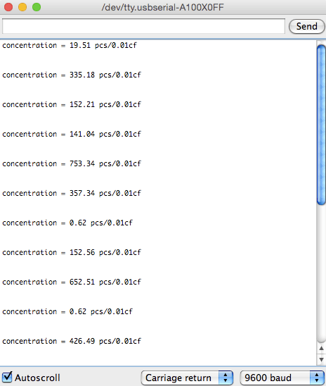
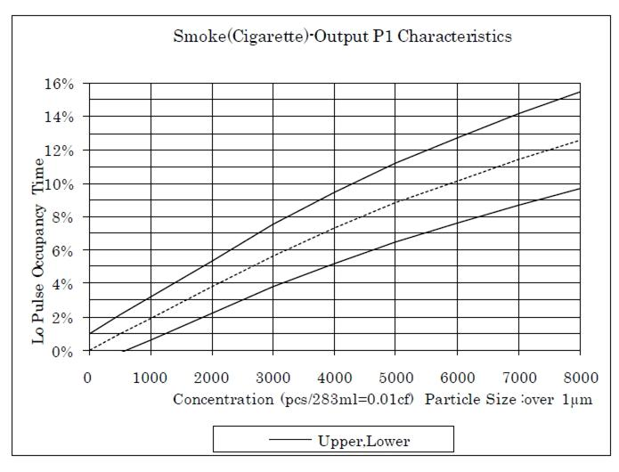
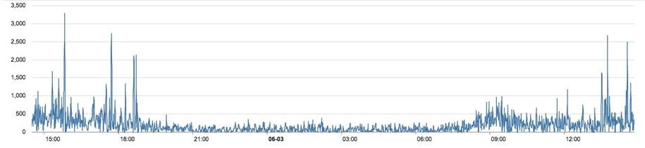
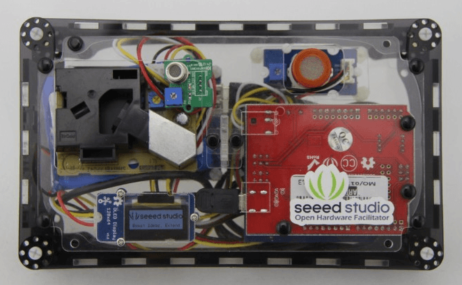

This Dust Sensor gives a good indication of the air quality in an environment by measuring the dust concentration. The Particulate Matter level (PM level) in the air is measured by counting the Low Pulse Occupancy time (LPO time) in given time unit. LPO time is proportional to PM concentration. This sensor can provide reliable data for air purifier systems; it is responsive to PM of diameter 1μm.
Note: This sensor uses counting method to measure dust concentration, not weighing method, and the unit is pcs/L or pcs/0.01cf.
Note: Please pay attention to the warnings listed here.

Note : In the latest version, output Hi Voltage is changed from 4.0V to 4.5V.
| Item | Min | Norm | Max | Unit |
|---|---|---|---|---|
| VCC | 4.75 | - | 5.75 | V |
| Standby Current Supply | - | 90 | - | mA |
| Detectable range of concentration | - | 0~28,000 / 0 ~ 8000 | - | pcs/liter / pcs/0.01cf |
| Operating Temperature Range | 0 | - | 45 | °C |
| Output Method | Negative Logic, Digital output, High: over 4.0V(Rev.2), Low: under 0.7V | |||
| Detecting the particle diameter | >1 μm | |||
| Dimensions | 59(W) × 45(H) × 22(D) [mm] | |||
| Humidity Range | 95% rh or less | |||
Following documents help user get started with Grove.
Here is a demo to show how to obtain PM concentration data from this Grove - Dust Sensor.
1. Plug the dust sensor into digital port D8 on the Grove - Base Shield. It can only be D8 because the operation of this sensor involves sampling. This function only can be achieved by D8, the input capturing pin of ATmega328P, on Arduino/Seeeduino.
Also, you can connect Grove - Dust sensor to Arduino UNO without Base Shield:
| Arduino UNO | Dust Sensor |
|---|---|
| 5V | Red wire |
| GND | Black wire |
| D8 | Yellow wire |
2. Copy and paste the demo code below to a new Arduino sketch.
/* Grove - Dust Sensor Demo v1.0 Interface to Shinyei Model PPD42NS Particle Sensor Program by Christopher Nafis Written April 2012 http://www.seeedstudio.com/depot/grove-dust-sensor-p-1050.html http://www.sca-shinyei.com/pdf/PPD42NS.pdf JST Pin 1 (Black Wire) => //Arduino GND JST Pin 3 (Red wire) => //Arduino 5VDC JST Pin 4 (Yellow wire) => //Arduino Digital Pin 8 */ int pin = 8; unsigned long duration; unsigned long starttime; unsigned long sampletime_ms = 2000;//sampe 30s ; unsigned long lowpulseoccupancy = 0; float ratio = 0; float concentration = 0; void setup() { Serial.begin(9600); pinMode(8,INPUT); starttime = millis();//get the current time; } void loop() { duration = pulseIn(pin, LOW); lowpulseoccupancy = lowpulseoccupancy+duration; if ((millis()-starttime) >= sampletime_ms)//if the sampel time = = 30s { ratio = lowpulseoccupancy/(sampletime_ms*10.0); // Integer percentage 0=>100 concentration = 1.1*pow(ratio,3)-3.8*pow(ratio,2)+520*ratio+0.62; // using spec sheet curve Serial.print("concentration = "); Serial.print(concentration); Serial.println(" pcs/0.01cf"); Serial.println("\n"); lowpulseoccupancy = 0; starttime = millis(); } }
In this program, the Seeeduino samples the total duration of "logic low" in 30s, and this duration illustrates the dust density of environment. Open Serial Monitor, we can get air quality's value detected by sensor from PC's serial port.

The result above consists of three parts: lowpulseoccupancy, ratio and concentration.
"lowpulseoccupancy" represents the Low Pulse Occupancy Time(LPO Time) detected in given 30s. Its unit is microseconds.
"ratio" reflects on which level LPO Time takes up the whole sample time.
"concentration" is a figure that has a physical meaning. It is calculated from the characteristic graph below by using the LPO time.

Here is a graph of the dust concentration measured in office :

We can see the concentration of dust is very low in the evening, but it is higher in the afternoon. A threshold can be set when the concentration is above a value. Also, if you want to set the sensor more sensitive you can add a fan on the sensor, and add a 10kΩ resistor between the Pin5 and Ground. More information please visit the blog of A.J.
Building a low-cost networked PM2.5 monitor -- Made by A.J.
Measuring the Pickle Jr. – a modified PPD42 with an attached fan. -- Made by A.J.
Testing the Shinyei PPD42NS -- Made by darell tan
Air Quality Monitoring -- Made by Chris Nafis
If you want to make some awesome projects by Grove - Dust Sensor, here is a project for reference.

This section an IoT demo make by Seeeduino and Grove.
More attention is being paid to the environmental air quality nowadays because the tiny particles in the air around can badly endanger people’s health. We always get the information of environment from our government department. But it’s the average value of the whole city/section. It can not reflect the environment around you accurately.

Grove_-_Dust_sensor datasheet
De-construction of the Shinyei PPD42NS dust sensor Made by Tracy Allen